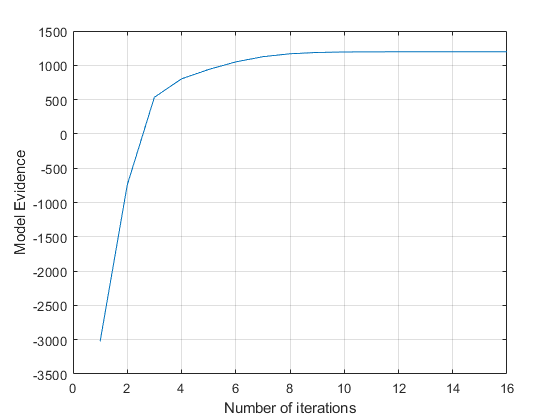
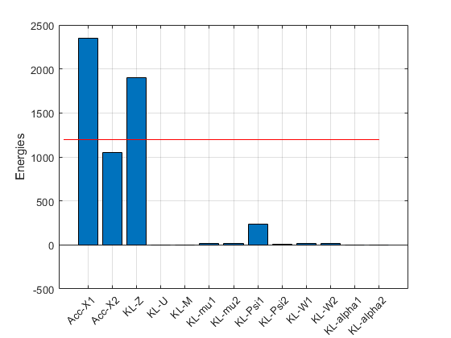

clear all
close all
N = 500;
z = randn(1,N);
W1 = [5 -3]';
W2 = [1 2]';
mu1 = [1 1]';
mu2 = [3 3]';
sigma = 0.1;
X1 = W1*z + mu1*ones(1,N) + 0.01*sigma*randn(2,N);
X2 = W2*z + mu2*ones(1,N) + sigma*randn(2,N);
options.maxIter = 512;
options.tol = 10^(-5);
cca = vbcca (X1,X2,1,1,options);
options.null = 1;
cca_null = vbcca (X1,X2,1,1,options);
cca_prob = probCCA (X1,X2,1);
disp('Data source 1:');
disp('True W VB-W ML-W');
disp([W1,cca.W1{1},cca_prob.W1{1}]);
disp('True mean VB-mean ML-mean');
disp([mu1,cca.mu1{1},cca_prob.mu1{1}]);
disp('Data source 2:');
disp('True W VB-W ML-W');
disp([W2,cca.W2{1},cca_prob.W2{1}]);
disp('True mean VB-mean ML-mean');
disp([mu2,cca.mu2{1},cca_prob.mu2{1}]);
disp('Obs noise covariance for data source 1:')
disp('True:')
disp(sigma^2*eye(2))
disp('VB:')
disp(cca.C1{1})
disp('ML:')
disp(cca_prob.C1{1})
figure
plot(cca.Fhist);
ylabel('Model Evidence');
xlabel('Number of iterations');
grid on
logBF_alt = cca.F - cca_null.F
figure
bar(cca.Fdecomp.term);
set(gca,'XTickLabel',cca.Fdecomp.name);
grid on
ylabel('Energies')
Ne = length(cca.Fdecomp.term);
hold on
plot([0 Ne],cca.F*ones(1,2),'r-');
Replicate 1, 1 iterations, total sum of distances = 19548.1.
Best total sum of distances = 19548.1
Iteration15, Lower bound:1197.13
Iteration16, Lower bound:1197.137
Relative change smaller than the tolerance after16 iterations.
Replicate 1, 1 iterations, total sum of distances = 19548.1.
Best total sum of distances = 19548.1
Iteration64, Lower bound:-869.3257
Iteration128, Lower bound:-848.2593
Iteration192, Lower bound:-832.5672
Iteration256, Lower bound:-817.5755
Iteration320, Lower bound:-804.177
Iteration384, Lower bound:-791.4093
Iteration448, Lower bound:-779.0027
Iteration512, Lower bound:-766.9332
Data source 1:
True W VB-W ML-W
5.0000 5.3916 5.0050
-3.0000 -3.2349 -3.0030
True mean VB-mean ML-mean
1.0000 0.8992 0.9174
1.0000 1.0604 1.0495
Data source 2:
True W VB-W ML-W
1.0000 1.0852 1.0075
2.0000 2.1655 2.0105
True mean VB-mean ML-mean
3.0000 2.9828 2.9865
3.0000 2.9535 2.9609
Obs noise covariance for data source 1:
True:
0.0100 0
0 0.0100
VB:
0.0251 -0.0150
-0.0150 0.0090
ML:
0.0257 -0.0154
-0.0154 0.0092
logBF_alt =
1.9641e+03
 